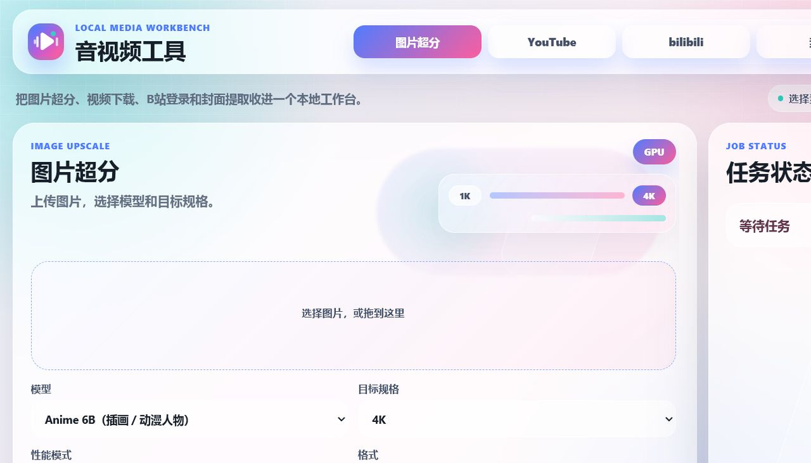
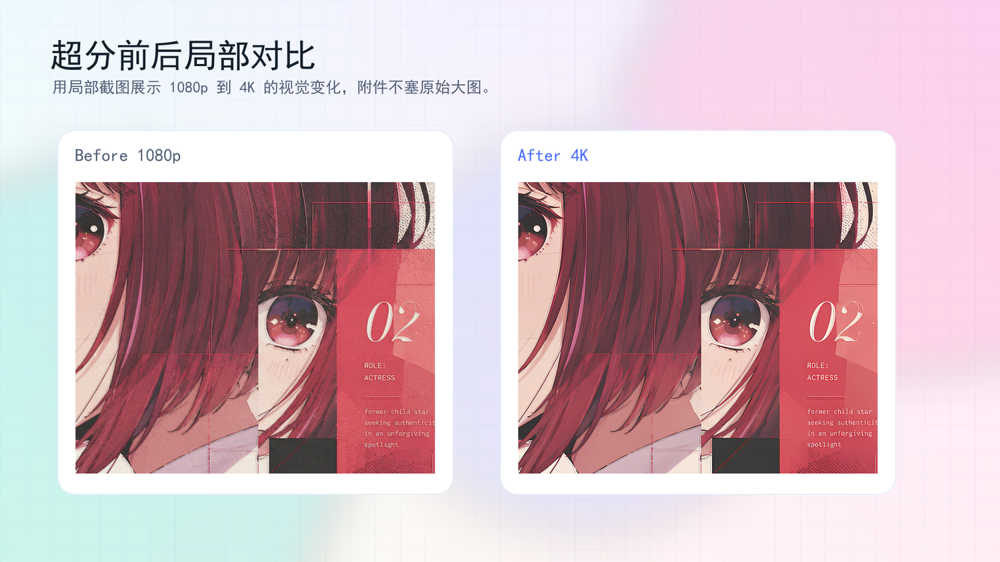
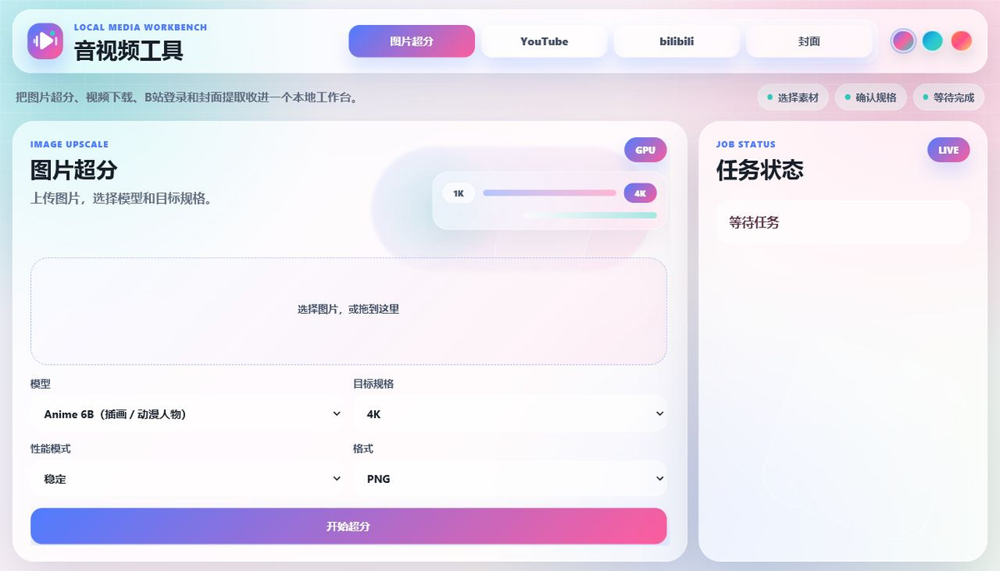
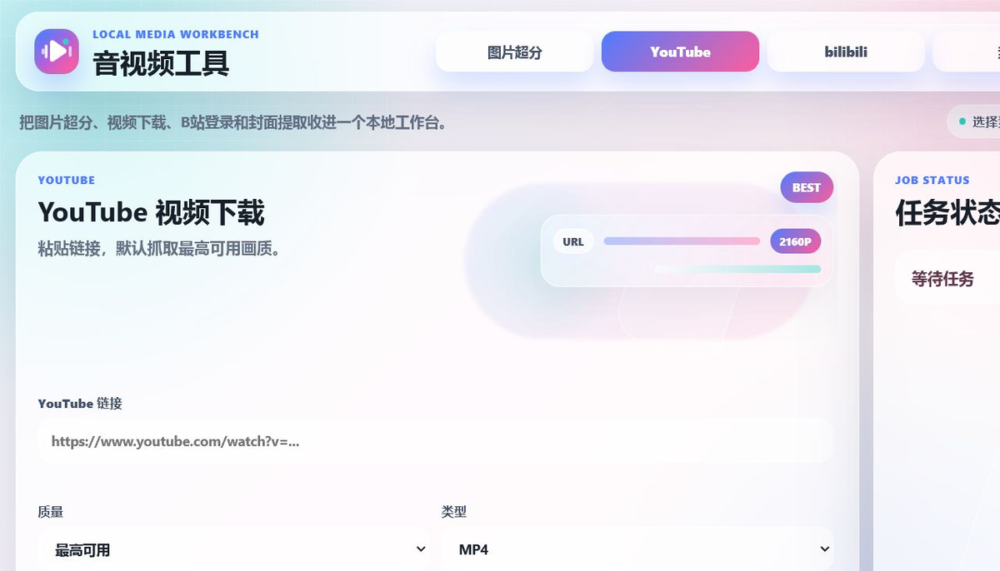
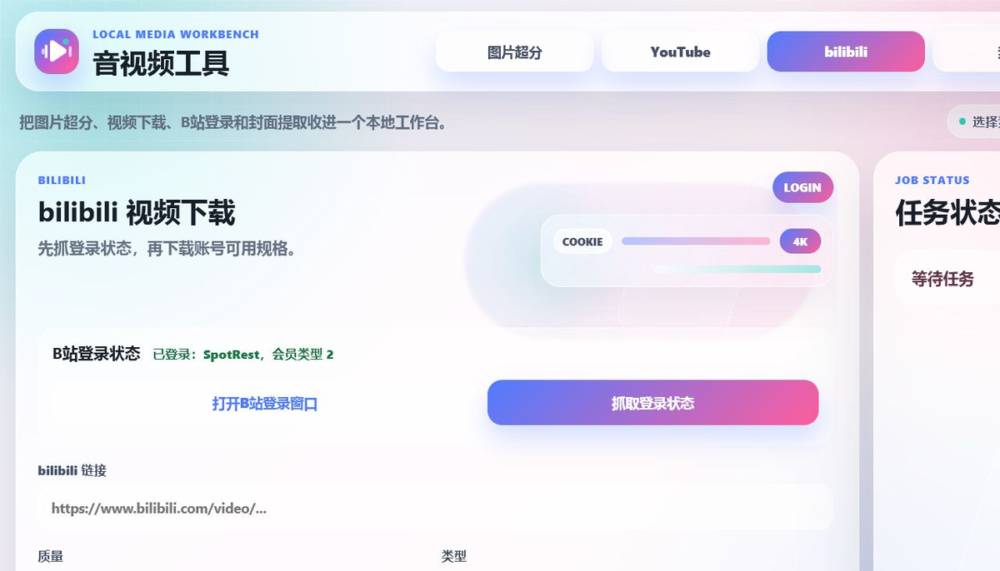
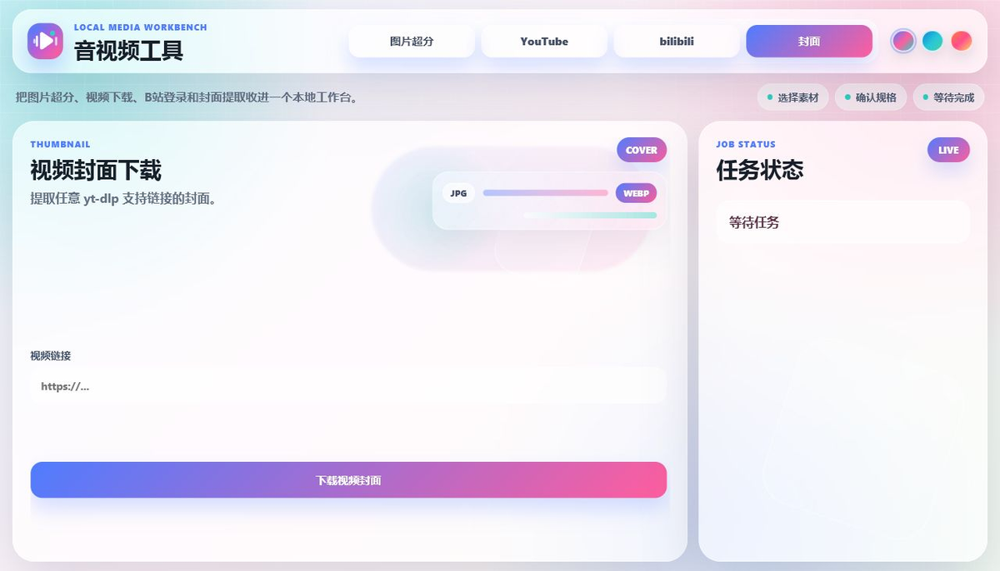
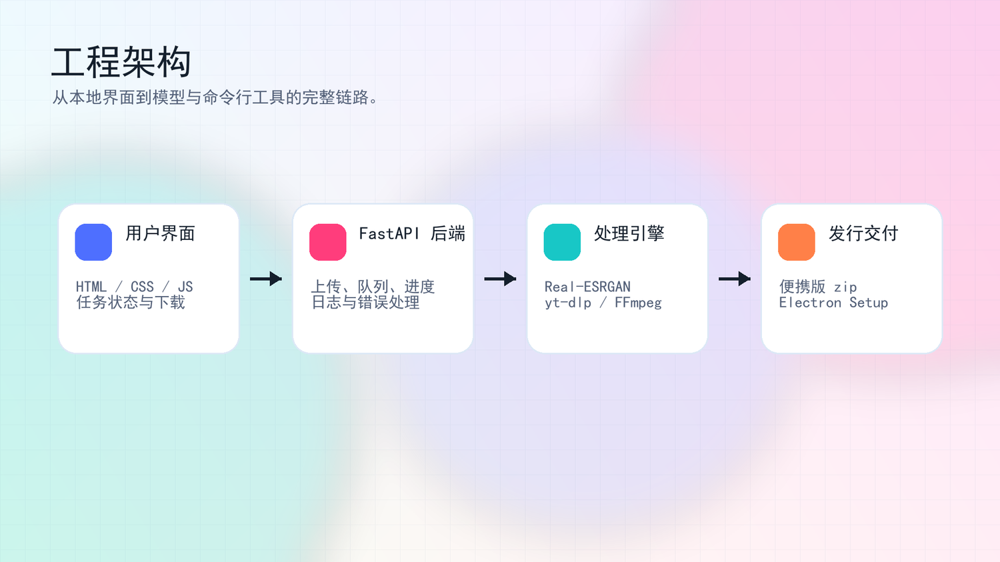

图片超分
支持 1K、2K、4K 和自定义长边，提供插画、动画帧、照片截图等模型场景。
LOCAL MEDIA WORKBENCH
把图片超分、视频下载、B站登录状态和封面提取整合进一个本地工作台，并交付为桌面安装包与便携版。

PRODUCT SCOPE
项目重点是将 Real-ESRGAN、yt-dlp、FFmpeg 等命令行能力封装为普通用户可以直接操作的产品界面。
支持 1K、2K、4K 和自定义长边，提供插画、动画帧、照片截图等模型场景。
封装 yt-dlp 与 FFmpeg，默认选择最高可用画质，并保留格式与清晰度控制。
统一链接输入和任务状态反馈，直接输出可下载封面文件。
Electron 桌面安装包与便携版 zip 共用本地后端运行时，降低跨电脑部署成本。
VISUAL RESULT
作品展示使用局部截图呈现视觉结果，避免在附件中放入体积过大的原始 4K 图片。

INTERFACE
界面按任务类型拆分，右侧任务状态区集中展示进度、日志、失败原因和下载结果。





ENGINEERING
后端以 FastAPI 管理任务，前端负责交互和状态展示，处理引擎由 Real-ESRGAN、yt-dlp 与 FFmpeg 组成。
DELIVERABLES
项目以代码仓库、Release 资产和作品集网页共同呈现。仓库用于查看实现，Release 用于获取可运行版本，本页面用于快速理解项目价值。